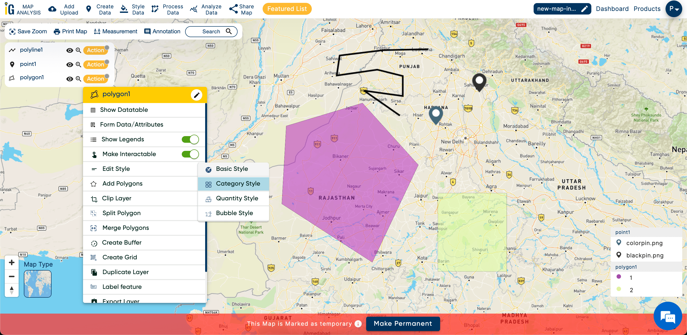
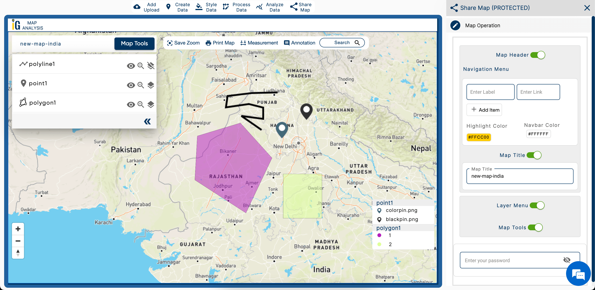

IGISMAP
This is an online GIS data manipulation tool, where User can do GIS mapping on a web application, We have multiple products ( as Modules ) which make gis mapping very easy
Angular Angular Material Type Script Mapbox Turf.js Html CSSMy Role :
- API integration with Angular
- Managed geojson data state in each component in a module called Map Maker
- Design UI on Angular also solved design issues of data table in GIS data module
- Research on Turf.js library and developed a intersect polygon mode
- Developed a mouse hover effect on Mapbox Map to show custom messages


XCELLEN
Xcellen Survey Tool is an angular based web application where pharma companies can conduct surveys for their products get report, add validations, set new resources and can do alot of things for increasing productivity.
Angular Angular Material Ag Grid Type Script Node JS Express JS MySQL BootstrapMy Role :
- System design of new module named Sales Advisory from scratch
- Created a standalone data analytics component using Ag-Grid
- Developed a drag and drop feature using angular cdk drag-drop
- Got token of salesforce user using google OAuth 2.0
- Developed API authentication system, restricts users to use eatch other's APIs
- Created APIs according to need of the project
- Migrated whole backend system from NodeJS v8 to v18 in Express JS